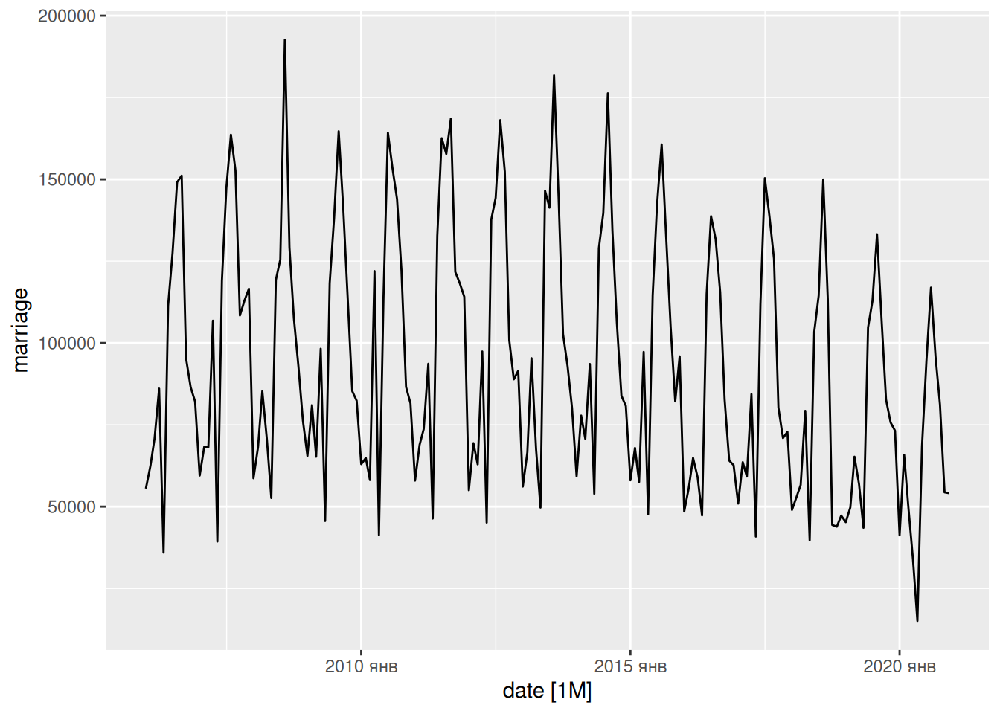
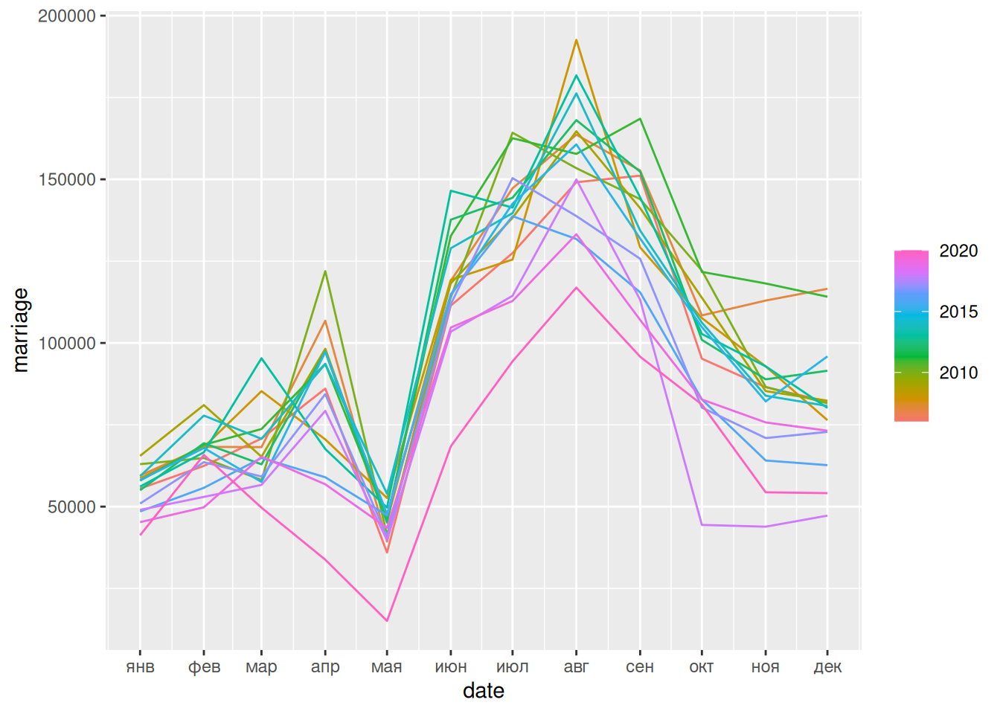
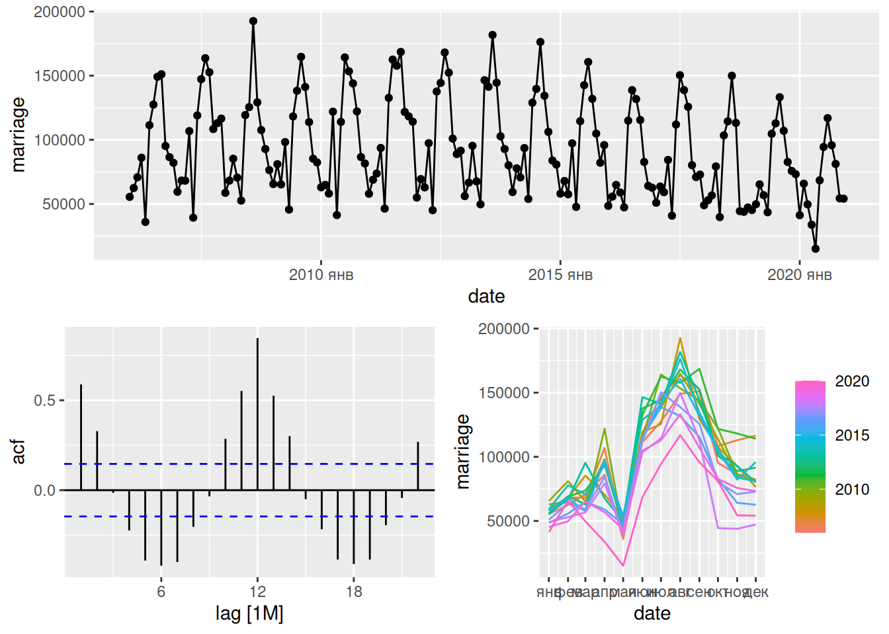
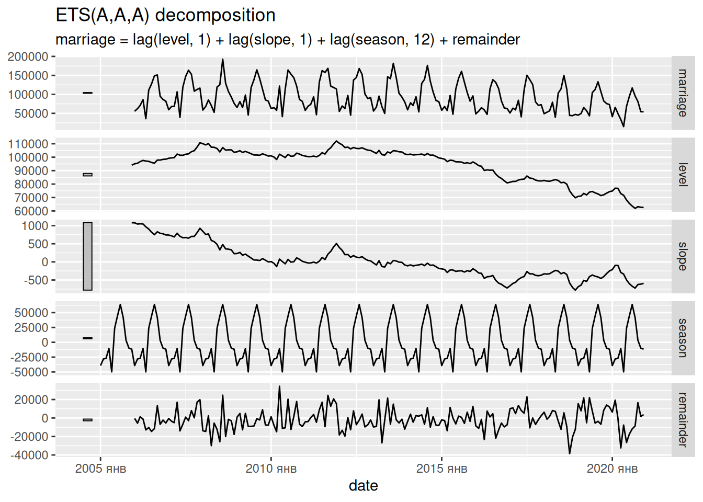
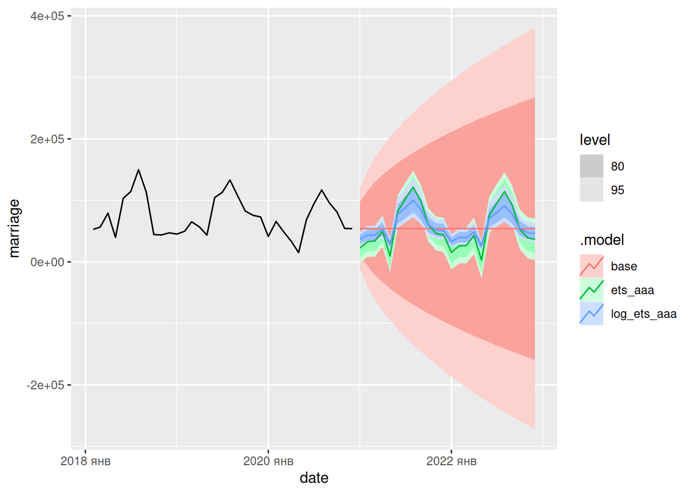

url_orig = 'https://github.com/bdemeshev/webinar_eusp_forecasting_r_2021_03_13/raw/main/original_data.xls'TS-intro
Пример формулы в техе
Вспомним теорему Пифагора :)
\[ c = \sqrt{a^2 + b^2} \]
Маленькое введение в ETS-модель
\(y_t\) — наблюдаемый временной ряд
Идейно в ряду есть случайность, сезонная составляющая и тренд.
\(\ell_t\) — ряд, очищенный от случайности и от сезонности.
\(b_t\) — текущая скорость роста ряда
\(s_t\) — сезонная прибавка
Если бы не было случайности…
\[ \begin{cases} s_t = s_{t-12} \\ b_t = b_{t-1} \\ \ell_t = \ell_{t-1} + b_{t-1} \\ y_t = \ell_{t-1} + b_{t-1} + s_{t-12} \end{cases} \]
Добавим случайность!…
\(u_t\) — случайность в момент \(t\)
\[ \begin{cases} u_t \sim N(0; \sigma^2) \\ s_t = s_{t-12} + \gamma u_t\\ b_t = b_{t-1} + \beta u_t \\ \ell_t = \ell_{t-1} + b_{t-1} + \alpha u_t \\ y_t = \ell_{t-1} + b_{t-1} + s_{t-12} + u_t \end{cases} \]
Что оценивается?
Данные: \(y_1\), \(y_2\), …, \(y_T\)
Неизвестные параметры: \(\alpha\), \(\beta\), \(\gamma\), \(\sigma^2\), \(\ell_0\), \(b_0\), \(s_0\), \(s_{-1}\), \(s_{-2}\), …, \(s_{-11}\) с ограничением \(s_0 + s_{-1} + ... + s_{-11}=0\).
Что почитать?
Метод максимального правдоподобия:
Выберем такие оценки неизвестных параметров, чтобы максимизировать вероятность имеющегося набора данных.
После решения задачи максимизации: \(\hat\alpha\), \(\hat\beta\), \(\hat\gamma\), ….
Вторая часть Мерлезонского балета :)
Встаем на плечи гигантов и подключаем пакеты :)
library(rio) # импорт-экспорт данных
library(tidyverse) # визуализация + обработка данных ── Attaching packages ─────────────────────────────────────── tidyverse 1.3.2 ──
✔ ggplot2 3.3.6 ✔ purrr 0.3.5
✔ tibble 3.1.8 ✔ dplyr 1.0.10
✔ tidyr 1.2.1 ✔ stringr 1.4.1
✔ readr 2.1.3 ✔ forcats 0.5.2
── Conflicts ────────────────────────────────────────── tidyverse_conflicts() ──
✖ dplyr::filter() masks stats::filter()
✖ dplyr::lag() masks stats::lag()library(fpp3) # пачка пакетов по времен рядам── Attaching packages ──────────────────────────────────────────── fpp3 0.4.0 ──
✔ lubridate 1.8.0 ✔ feasts 0.3.0
✔ tsibble 1.1.3 ✔ fable 0.3.2
✔ tsibbledata 0.4.1
── Conflicts ───────────────────────────────────────────────── fpp3_conflicts ──
✖ lubridate::date() masks base::date()
✖ dplyr::filter() masks stats::filter()
✖ tsibble::intersect() masks base::intersect()
✖ tsibble::interval() masks lubridate::interval()
✖ dplyr::lag() masks stats::lag()
✖ tsibble::setdiff() masks base::setdiff()
✖ tsibble::union() masks base::union()Смотрим на наш набор данных!
d = import('original_data.csv')
colnames(d) = d[3, ]
d1 = d[-(1:3), ]
d2 = d1[, -2]
colnames(d2)[1:2] = c('region', 'period')
# export(d2, 'd2.csv')
# d2 = import('d2.csv')
unique(d2$region) [1] "643 Российская Федерация"
[2] "030 Центральный федеральный округ"
[3] "14000000000 Белгородская область"
[4] "15000000000 Брянская область"
[5] "17000000000 Владимирская область"
[6] "20000000000 Воронежская область"
[7] "24000000000 Ивановская область"
[8] "29000000000 Калужская область"
[9] "34000000000 Костромская область"
[10] "38000000000 Курская область"
[11] "42000000000 Липецкая область"
[12] "46000000000 Московская область"
[13] "54000000000 Орловская область"
[14] "61000000000 Рязанская область"
[15] "66000000000 Смоленская область"
[16] "68000000000 Тамбовская область"
[17] "28000000000 Тверская область"
[18] "70000000000 Тульская область"
[19] "78000000000 Ярославская область"
[20] "45000000000 Город Москва столица Российской Федерации город федерального значения"
[21] "041 Сибирский федеральный округ"
[22] "84000000000 Республика Алтай"
[23] "93000000000 Республика Тыва"
[24] "95000000000 Республика Хакасия"
[25] "01000000000 Алтайский край"
[26] "04000000000 Красноярский край"
[27] "04100000000 Таймырский (Долгано-Ненецкий) автономный округ (Красноярский край)"
[28] "04130000000 Эвенкийский автономный округ (Красноярский край)"
[29] "25000000000 Иркутская область"
[30] "25100000000 Усть-Ордынский Бурятский округ"
[31] "32000000000 Кемеровская область - Кузбасс"
[32] "50000000000 Новосибирская область"
[33] "52000000000 Омская область"
[34] "69000000000 Томская область"
[35] "042 Дальневосточный федеральный округ"
[36] "81000000000 Республика Бурятия"
[37] "76000000000 Забайкальский край"
[38] "76100000000 Агинский Бурятский округ (Забайкальский край)"
[39] "98000000000 Республика Саха (Якутия)"
[40] "30000000000 Камчатский край"
[41] " 30100000000 Корякский округ, входящий в состав Камчатского края"
[42] "05000000000 Приморский край"
[43] "08000000000 Хабаровский край"
[44] "10000000000 Амурская область"
[45] "44000000000 Магаданская область"
[46] "64000000000 Сахалинская область"
[47] "99000000000 Еврейская автономная область"
[48] "77000000000 Чукотский автономный округ"
[49] "031 Северо-Западный федеральный округ"
[50] "86000000000 Республика Карелия"
[51] "87000000000 Республика Коми"
[52] "11000000000 Архангельская область"
[53] "11100000000 Ненецкий автономный округ (Архангельская область)"
[54] "11001000000 Архангельская область (кроме Ненецкого автономного округа)"
[55] "19000000000 Вологодская область"
[56] "27000000000 Калининградская область"
[57] "41000000000 Ленинградская область"
[58] "47000000000 Мурманская область"
[59] "49000000000 Новгородская область"
[60] "58000000000 Псковская область"
[61] "40000000000 Город Санкт-Петербург город федерального значения"
[62] "032 Южный федеральный округ (по 2009 год)"
[63] "037 Южный федеральный округ (с 2010 года)"
[64] "040 Южный федеральный округ (с 29.07.2016)"
[65] "79000000000 Республика Адыгея (Адыгея)"
[66] "85000000000 Республика Калмыкия"
[67] "35000000000 Республика Крым"
[68] "03000000000 Краснодарский край"
[69] "12000000000 Астраханская область"
[70] "18000000000 Волгоградская область"
[71] "60000000000 Ростовская область"
[72] "67000000000 Город федерального значения Севастополь"
[73] "038 Северо-Кавказский федеральный округ"
[74] "82000000000 Республика Дагестан"
[75] "26000000000 Республика Ингушетия"
[76] "83000000000 Кабардино-Балкарская Республика"
[77] "91000000000 Карачаево-Черкесская Республика"
[78] "90000000000 Республика Северная Осетия-Алания"
[79] "96000000000 Чеченская Республика"
[80] "07000000000 Ставропольский край"
[81] "033 Приволжский федеральный округ"
[82] "80000000000 Республика Башкортостан"
[83] "88000000000 Республика Марий Эл"
[84] "89000000000 Республика Мордовия"
[85] "92000000000 Республика Татарстан (Татарстан)"
[86] "94000000000 Удмуртская Республика"
[87] "97000000000 Чувашская Республика - Чувашия"
[88] "57000000000 Пермский край"
[89] " 57100000000 Коми-Пермяцкий округ, входящий в состав Пермского края"
[90] "33000000000 Кировская область"
[91] "22000000000 Нижегородская область"
[92] "53000000000 Оренбургская область"
[93] "56000000000 Пензенская область"
[94] "36000000000 Самарская область"
[95] "63000000000 Саратовская область"
[96] "73000000000 Ульяновская область"
[97] "034 Уральский федеральный округ"
[98] "37000000000 Курганская область"
[99] "65000000000 Свердловская область"
[100] "71000000000 Тюменская область"
[101] "71100000000 Ханты-Мансийский автономный округ - Югра (Тюменская область)"
[102] "71140000000 Ямало-Ненецкий автономный округ (Тюменская область)"
[103] "71001000000 Тюменская область (кроме Ханты-Мансийского автономного округа-Югры и Ямало-Ненецкого автономного округа)"
[104] "75000000000 Челябинская область"
[105] "035 Сибирский федеральный округ"
[106] "036 Дальневосточный федеральный округ"
[107] "039 Крымский федеральный округ"
[108] "46001000000 Московская обл. в старых границах"
[109] "45001000000 Москва в старых границах" d3 = filter(d2, !str_detect(period, '-'))
d4 = separate(d3, period, c('percode', 'month'), sep = ' ')
d5 = pivot_longer(d4, cols=`2006`:`2020`,
names_to = 'year',
values_to = 'marriage')
d6 = separate(d5, region, c('regcode', 'region'),
sep = ' ', extra = 'merge')
d7 = select(d6, -percode)
# export(d7, 'd7.csv')
# d7 = import('d7.csv')
glimpse(d7)Rows: 19,620
Columns: 5
$ regcode <chr> "643", "643", "643", "643", "643", "643", "643", "643", "643"…
$ region <chr> "Российская Федерация", "Российская Федерация", "Российская Ф…
$ month <chr> "январь", "январь", "январь", "январь", "январь", "январь", "…
$ year <chr> "2006", "2007", "2008", "2009", "2010", "2011", "2012", "2013…
$ marriage <chr> "55,509", "59,495", "58,668", "65,507", "62,980", "57,949", "…d8 = mutate(d7, regcode = as.numeric(regcode))
d9 = mutate(d8, marriage = as.numeric(str_remove(marriage, ',')))
d10 = mutate(d9, month = str_replace(month, 'май', 'мая'))
d11 = mutate(d10, date = paste0('01-', month, '-', year))
glimpse(d11)Rows: 19,620
Columns: 6
$ regcode <dbl> 643, 643, 643, 643, 643, 643, 643, 643, 643, 643, 643, 643, 6…
$ region <chr> "Российская Федерация", "Российская Федерация", "Российская Ф…
$ month <chr> "январь", "январь", "январь", "январь", "январь", "январь", "…
$ year <chr> "2006", "2007", "2008", "2009", "2010", "2011", "2012", "2013…
$ marriage <dbl> 55509, 59495, 58668, 65507, 62980, 57949, 55008, 56123, 59291…
$ date <chr> "01-январь-2006", "01-январь-2007", "01-январь-2008", "01-янв…d12 = mutate(d11, date = dmy(date))
# export(d12, 'd12.csv')
# d12 = import('d12.csv')Ура, оценим ETS модель!
data = import('d12.csv')
glimpse(data)Rows: 19,620
Columns: 6
$ regcode <dbl> 643, 643, 643, 643, 643, 643, 643, 643, 643, 643, 643, 643, 6…
$ region <chr> "Российская Федерация", "Российская Федерация", "Российская Ф…
$ month <chr> "январь", "январь", "январь", "январь", "январь", "январь", "…
$ year <int> 2006, 2007, 2008, 2009, 2010, 2011, 2012, 2013, 2014, 2015, 2…
$ marriage <int> 55509, 59495, 58668, 65507, 62980, 57949, 55008, 56123, 59291…
$ date <IDate> 2006-01-01, 2007-01-01, 2008-01-01, 2009-01-01, 2010-01-01,…rus = filter(data, regcode == 643)
rus1 = select(rus, date, marriage)
rus2 = mutate(rus1, date = yearmonth(date))
rus3 = arrange(rus2, date)
marr = as_tsibble(rus3, index = date)
marr# A tsibble: 180 x 2 [1M]
date marriage
<mth> <int>
1 2006 янв 55509
2 2006 фев 62449
3 2006 мар 70798
4 2006 апр 86055
5 2006 мая 35960
6 2006 июн 111409
7 2006 июл 127475
8 2006 авг 149120
9 2006 сен 151116
10 2006 окт 95192
# … with 170 more rowsГрафик в студию!
autoplot(marr, marriage)
gg_season(marr, marriage)
gg_tsdisplay(marr, marriage)
Оценим несколько моделей!
mod_table = model(marr,
base = NAIVE(marriage),
ets_aaa = ETS(marriage ~ error('A') + trend('A') + season('A')),
log_ets_aaa = ETS(log(marriage) ~ error('A') + trend('A') + season('A'))
)
report(select(mod_table, ets_aaa))Series: marriage
Model: ETS(A,A,A)
Smoothing parameters:
alpha = 0.1186864
beta = 0.005995309
gamma = 0.0001000175
Initial states:
l[0] b[0] s[0] s[-1] s[-2] s[-3] s[-4] s[-5]
94053.92 1080.353 -11664.25 -9899.74 3383.458 41550.62 63677.38 44208.74
s[-6] s[-7] s[-8] s[-9] s[-10] s[-11]
23604.2 -49860.58 -10576.48 -27034.88 -28138.91 -39249.55
sigma^2: 158270836
AIC AICc BIC
4350.343 4354.121 4404.624 autoplot(components(select(mod_table, ets_aaa)))Warning: Removed 12 row(s) containing missing values (geom_path).
Прогнозы:
fcst = forecast(mod_table, h = '2 years')
fcst# A fable: 72 x 4 [1M]
# Key: .model [3]
.model date marriage .mean
<chr> <mth> <dist> <dbl>
1 base 2021 янв N(54121, 1.2e+09) 54121
2 base 2021 фев N(54121, 2.3e+09) 54121
3 base 2021 мар N(54121, 3.5e+09) 54121
4 base 2021 апр N(54121, 4.6e+09) 54121
5 base 2021 мая N(54121, 5.8e+09) 54121
6 base 2021 июн N(54121, 6.9e+09) 54121
7 base 2021 июл N(54121, 8.1e+09) 54121
8 base 2021 авг N(54121, 9.3e+09) 54121
9 base 2021 сен N(54121, 1e+10) 54121
10 base 2021 окт N(54121, 1.2e+10) 54121
# … with 62 more rowsautoplot(fcst, filter(marr, date > ymd('2018-01-01')))Warning in mask$eval_all_filter(dots, env_filter): Incompatible methods
(">.vctrs_vctr", ">.Date") for ">"